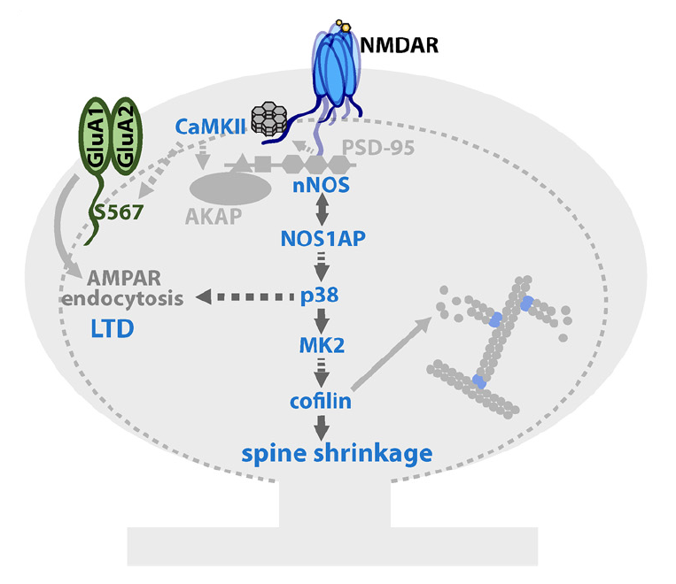

Preprint featuring one of the projects I worked on during my time as a research assistant! Here we start to put together the molecular signaling pathway downstream of non-ionotropic LTD and spine shrinkage. https://t.co/MBSfExBzih
— Jennifer Jahncke (@thejenjay) January 10, 2020
.
What is meant by non-ionotropic LTD? Good question. You probably learned that for LTD (and the associated spine shrinkage) to occur, calcium influx through the NMDA receptor is important. This is true.
.
Glutamate binds the NMDA receptor, Ca2+ fluxes into the cell and binds PP2B, which dephosphorylates AMPA receptors, leading to AMPA receptor endocytosis and synaptic weakening.
.
For this next part you need to know something about NMDA receptors: they require TWO agonists for the ion pore to open: (1) glutamate and (2) glycine or D-serine. If glutamate binds the receptor in the absence of the co-agonist the pore does not open and no Ca2+ can flow through.
.
Recently-ish (Nabavi et al., 2013) it was found that if glutamate binds WITHOUT a co-agonist….LTD can still occur. 🤯 (PS - yes, recently-ish was 6-7 years ago…)
.
But there’s no calcium influx! So what is going on? Some FRET experiments showed that the intracellular tails of the NMDA receptor move in response to glutamate binding, even in the absence of a co-agonist. This certainly smells like metabotropic signaling.
.
But people didn’t like calling it metabotropic because NMDA receptors are ionotropic…fine…we’ll call it non-ionotropic signaling.
.
Before our paper, the only known players in the non-ionotropic signaling pathway were p38 MAPK, CaMKII, and PP2A. Here we parse out the signaling pathway, linking NMDA receptor agonism and the associated conformational change to AMPA receptor endocytosis.
.
Our paper uses 2-photon glutamate uncaging to induce LTP at single spines. This results in reduced synaptic strength (assayed with ephys) and spine shrinkage. We then blocked potential signaling molecules and looked to see if this also blocked spine shrinkage.
.
Indeed, we found that CaMKII, nNOS, NOS1AP, p38 MAPK, MK2, and cofilin were all necessary for non-ionotropic spine shrinkage.

Update: This paper has since been published at J. Neuro!